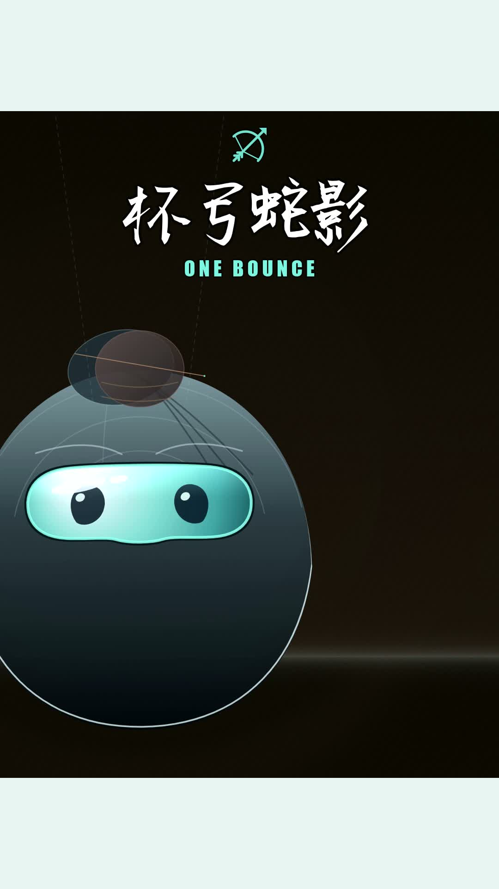

统一片库与准入
四条制作线交付到同一个权威发布库。已准入国内视频可直接用于海外；同作多入口只计一次。
MR. TOSWIM · SIX PLATFORMS
国内7平台与海外6平台共用唯一发布库、统一准入与唯一总台账。本站呈现海外六平台的执行规划，当前以海外华人为主要受众，让每次发布都有来源、有节奏，也有可复核的结果。
国内与海外分线执行、分线核验，发布结果汇入唯一总台账。策略说明与运营证据分别更新，预约不算已发。

四条制作线交付到同一个权威发布库。已准入国内视频可直接用于海外；同作多入口只计一次。
原画面、剪辑、音乐、中文、配音与片尾完整保留。海外只检查同作封面格式，缺尺寸时只补封面。
国内由AG／DB执行，海外由CG执行。十三平台状态汇总到唯一总台账，各平台结果分别核验与统计。
01 / OPERATING SNAPSHOT
这是最近一次已登记结果的快照，不是六个平台的实时数据接口。
加载周覆盖口径…
海外六平台各自每天至少2条，由CG全权选片、核对重复并提前一周排期。当前优先选择国内已发、目标海外平台尚未发且没有有效预约的作品；部分平台已发的，只补缺失平台。
首批11月2—8日共14支、84个平台目标。AG-023已报告14支国内七平台发布完成，CG核对了原片版本及海外现有记录；国内结果属于AG报告。上方数字和下方日历只统计实际回执。
持续关注国内发布进度。待国内与海外已发布作品基本一致后，再与AG协调共同的新片计划和节奏；特殊情况单独记录。临时追加或已发作品重发，仅按本人点名或AG明确转达执行。
W44原计划及历史缺口原样保留，不倒填为完成；本周新预约不能抵消过去未建槽。常规、临时点名与有限历史分别计数。
六条当前原帖继续保留；封面为五平台符合统一主视觉，加TikTok本人指定的一项保留例外。新Pinterest代次单独计时，已删除历史代次不恢复。
X ↗ · YouTube ↗ · Instagram ↗ · Facebook ↗ · Pinterest ↗ · TikTok ↗
首验下界均为10月25日UTC：X／YouTube 11:18:33、TikTok 11:21:23、Instagram／Facebook 14:43:01、当前Pinterest 16:49:21。指标观察时间与原帖首验时间分开保存，不作精确等龄或创意因果推断。
常规运营、点名直发、有限历史补齐分别计数；暂停草稿不计入有效覆盖。
02 / PLATFORM ROLES
当前以海外华人为主要受众，这是已确认方向。账号与执行路径沿用已登记记录；细分读者、职责和表达重点仍是规划建议，后续用数据检验。
03 / SHARED LIBRARY
先从统一发布库选取已准入作品，再追溯制作出处。品牌视频站与素材群用于发现、预览和追溯，不另建片库，也不重复计算作品。
ONE LIBRARY · CONTINUOUS INTAKE
制作线或入口已登记，不等于该线每部作品都已准入。已准入国内原片可直接供海外使用；未准入作品先完成统一准入。同一作品在网站、群消息或交付链接重复出现时，按作品与版本合并核对。总台账统一汇总，国内七平台与海外六平台的发布计数分别保留。
04 / CONTENT SYSTEM
现行发布以真实动态视频为默认。以下四个选题栏目用于规划作品讲什么，与上方说明制作出处的四条制作线分开，不机械规定素材比例。
DESIGN & PRODUCT
看得到的形态、细节和设计判断，让产品思考有具体对象。
LIFE BY THE WATER
从泳池、水域与日常使用场景切入，让品牌有生活语境。
CREATIVE FILMS
以六字母、泳镜侠与动画故事，积累有辨识度的视觉资产。
FOUNDER'S NOTES
记录品牌选择背后的问题、判断与取舍，避免空泛的口号。
05 / EXECUTION RHYTHM
海外六平台每天各至少2条；基线为每周14个共同主题、84次平台发布，常规时段为北京时间08:00、18:00。优先国内已发且该海外平台未发的作品，由CG自主选片并逐平台去重。
滚动提前至少7天规划。每天检查未来7天覆盖，每周日07:20准备隔一周的完整片单，保持真正的一周提前量。启动批先落实11月2—8日；只有平台接受并回读的项目才算已排。
错过的时段如实留缺。不倒填时间、不集中补昨日欠帖、不重复创建成功或已接受项；常规帖至少间隔2小时。
06 / MEASURE & IMPROVE
发布完成回答“有没有发对”；表现观察回答“发生了什么”。两者不能互相替代。
有效队列、原帖已验、真实缺口、重复发布情况。
按平台分别记录观看、触达、互动、收藏与点击。
后续建立关注、有效对话及业务线索口径，不先编造转化结果。
| 平台 | 当前可见口径 | 不能直接当作 |
|---|---|---|
| X | 公开帖Views；服务商曝光另列 | 视频观看、独立观看人数 |
| Instagram / Facebook | 服务商视频观看、触达及已支持互动 | 完播、APV或与其他平台同口径排名 |
| YouTube | 公开视频观看；服务商数据保留独立来源与时间 | engaged views、订阅或完播 |
| 曝光、MRC视频观看、收藏与点击 | 公开观看或通用观看时长 | |
| TikTok | Studio累计视频观看、赞与评论 | 公开／独立／engaged观看 |
以上为三类分账观察的正式已登记检查点数量，不是发帖量，也不表示所有指标字段齐全。另存待登记观察未并入这些数字。十三平台总台账统一汇总；常规运营、W42历史与点名作品继续分别统计。缺失值保留未知，不填0；迟取快照不倒填为严格等龄，不作语言或创意因果结论。
先解决队列完整性、时间异常与真实核验，避免用更多内容掩盖流程缺口。
基于真实结果优化后续选题、英文标题、正文与同作封面；既有预约和原片不批量改写。
在可比口径和足够观察基础上复盘，逐步形成平台表达模板。具体实验、素材变更和资源投入另行确认。
07 / CONTROLS & OPEN ITEMS
以下是已记录的控制规则与待办，不是新提出的操作请求。
每Brand每月超过600次会触发审核，审核期间已排内容也可能暂停；更高阈值尚未获批。六平台每天各2条的基线在30／31天为360／372次；临时追加另计。实际月度计量未知，不能按本地计划推算剩余额度。
不拆账号或路径规避，不擅自降频、购买或升级。
已清理范围为95个原生图片对象及13个图片预约／草稿。保持删除保护，不自动恢复；视频、视频封面、头像、原始素材、文字和链接受保护。
Instagram／Facebook两格未建；Pinterest／YouTube两份既有草稿目标08点、保存09点，仍暂停且不计有效覆盖。该时段已过，保留缺口；不猜补偿小时、不激活或重建。X／TikTok当次原帖及其他周日时段的既有核验保留原日期。
部分历史素材的必要标识选择、上传页封面保存、具体原片／音乐版本和Pinterest版本链仍待处理；旧Instagram三部作品的选帧由本人手动处理。已成功和已接受的项目保留，不盲重传、不重复催问。
当前服务商配置已显示TikTok主理人账号；配置连接不等于全部发布能力可用。本批使用原生Studio保存3:4同作封面并逐条核对预约；原生结果到点后另验。
08 / LIVING PLAN
规划是长期工作底稿，执行快照是带日期的证据。两者分别更新，保留版本与变化原因。
维护节奏：沿用既有晨检与发后核验流程；新规则或已登记结果变化后同步更新，保留版本记录。站点不执行社交平台发布或修改账号设置。